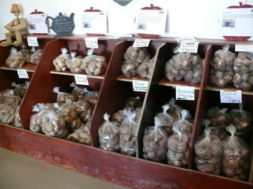
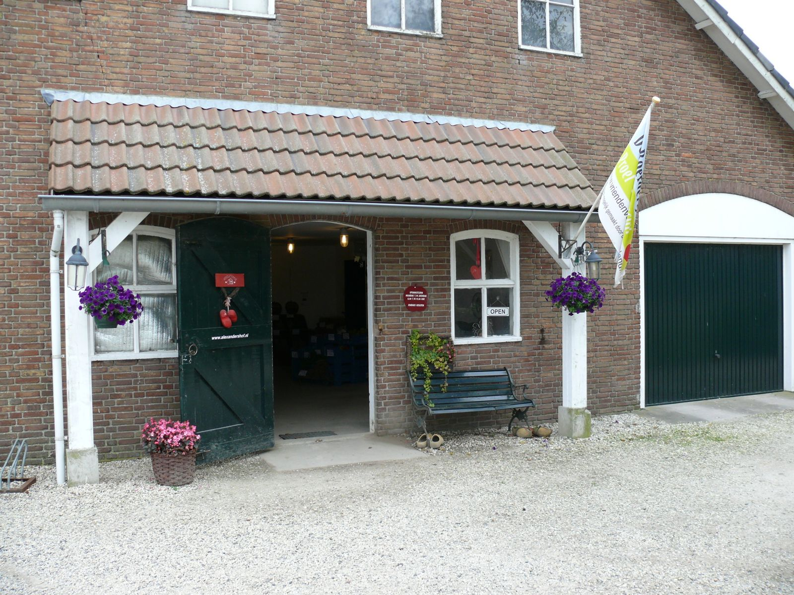
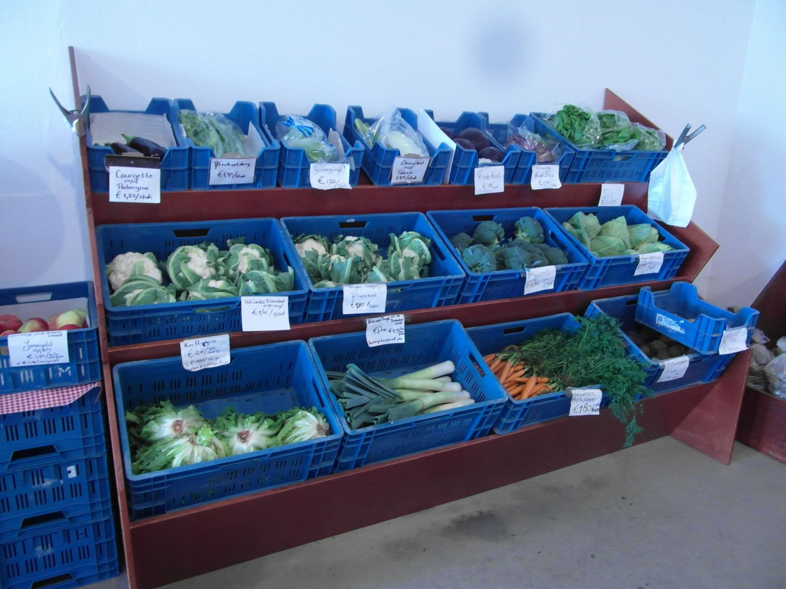
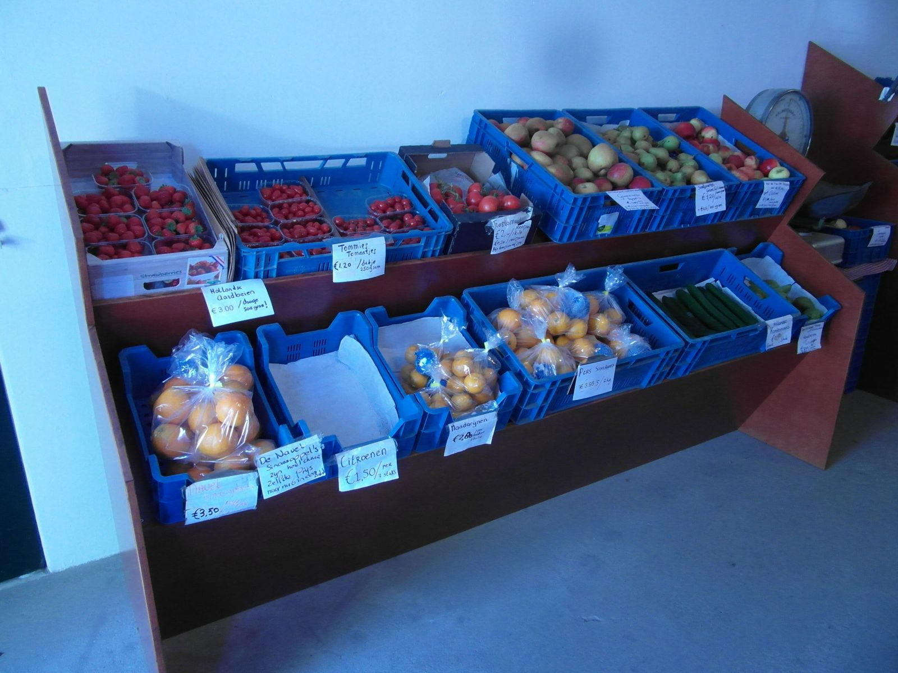
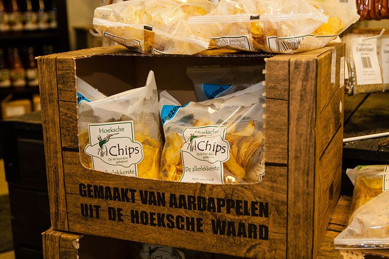
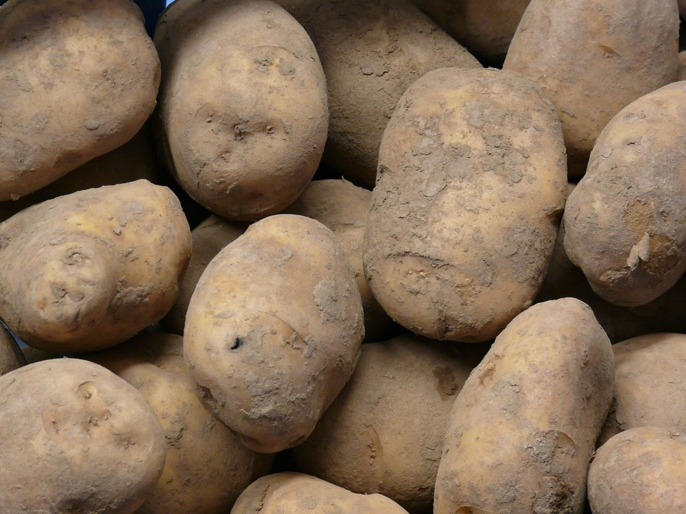
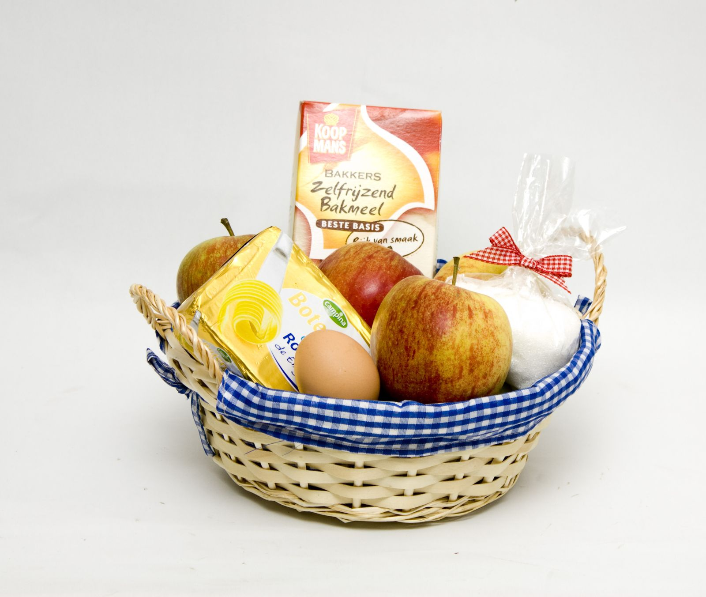
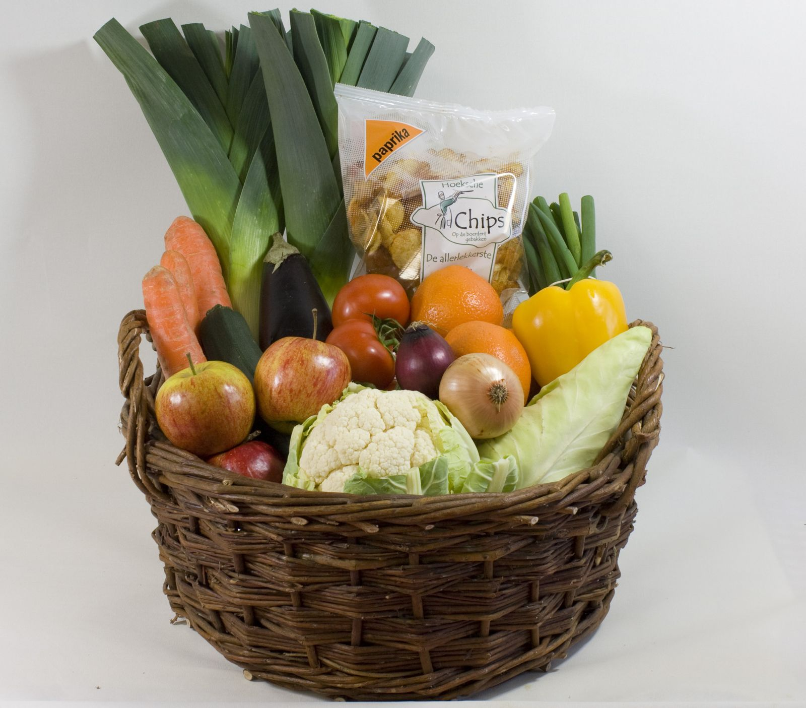
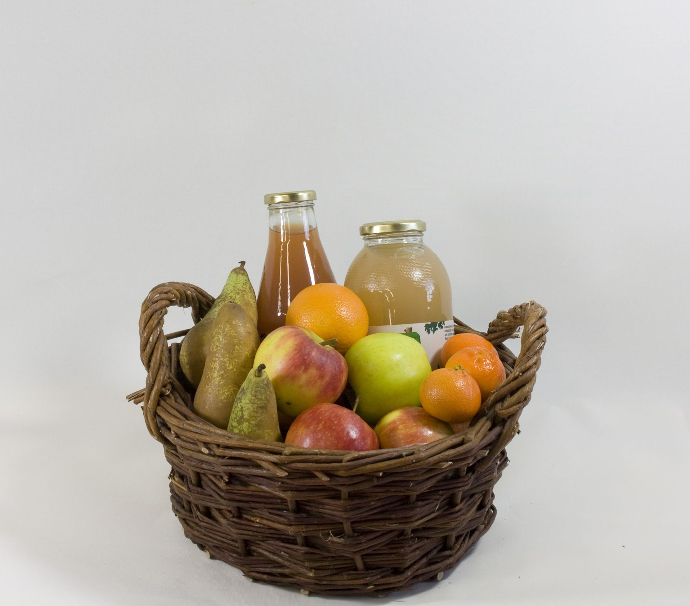
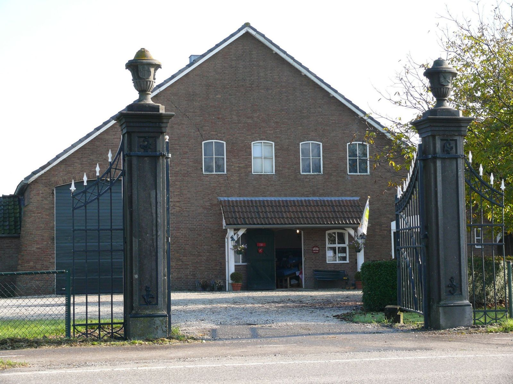

Aardappelen
Zes soorten van eigen grond, van zeer vastkokend tot zeer kruimig.
Van eigen grondMeer info

De boerderijwinkel van de familie Groenenboom, aan de Rijksstraatweg tussen Numansdorp en Klaaswaal. Zes soorten aardappelen van eigen grond, kool van de Hoeksche Waard en fruit van collega-telers. Elke dag open, behalve zondag.
De aardappelen staan centraal. Daarnaast groente van eigen land en groente, fruit en streekproducten van collega's uit de regio.

Zes soorten van eigen grond, van zeer vastkokend tot zeer kruimig.

Bloemkool, broccoli, spitskool en rode kool van eigen land, en wat het seizoen verder brengt.

Hollandse appels en peren van een collega-teler, citrusfruit en zomerfruit.

Ambachtelijke sappen, Hoeksche chips, scharreleieren, verse kruiden en advocaat.

Bij ons koop je het hele jaar door aardappelen van dezelfde oogst. Vind je je favoriet, dan smaakt hij in mei net zo als in oktober. Na het rooien bewaren we ze op 7 graden in onze eigen loods.
Van zeer vastkokend voor de salade tot zeer kruimig voor de stamppot: voor iedere smaak is er een passende aardappel. Niet zeker welke je nodig hebt? Vraag het gerust in de winkel.
Op zoek naar een leuk en origineel cadeau? Onze manden passen we aan het seizoen aan en vullen we graag aan met een persoonlijke wens. Ook voor meerdere pakketten tegelijk.

Alle ingrediënten voor een appeltaart in één mandje, met het recept op de mix.

Aardappelen, bloemkool, prei, witlof en wat het seizoen nog meer brengt.

Seizoensfruit met een fles fruitdrank, of een klein mandje met drie soorten fruit.

Sinds 1995 zit de familie Groenenboom op de Alexandershof. Naast de winkel telen we aardappelen, bieten, graan en uien, en kool voor de winkel en een paar groentespecialisten. Het meeste land ligt rondom de boerderij.
We zijn begonnen met de verkoop van een paar zakjes aardappelen; inmiddels is het een volwaardige boerderijwinkel. Je herkent ons aan de poort uit 1786: de boerderij is vernoemd naar prins Alexander, de zoon van koningin Sophie.
"Bij ons weet je wat je krijgt. Wij vertellen hier graag over!"Familie Groenenboom
Iedere maand zetten we groente uit de winkel centraal. In november zijn dat bloemkool en rode kool.
Aan de Rijksstraatweg, tussen Numansdorp en Klaaswaal. Een cadeaupakket bestellen of iets vragen? Bel, mail of stuur een bericht.